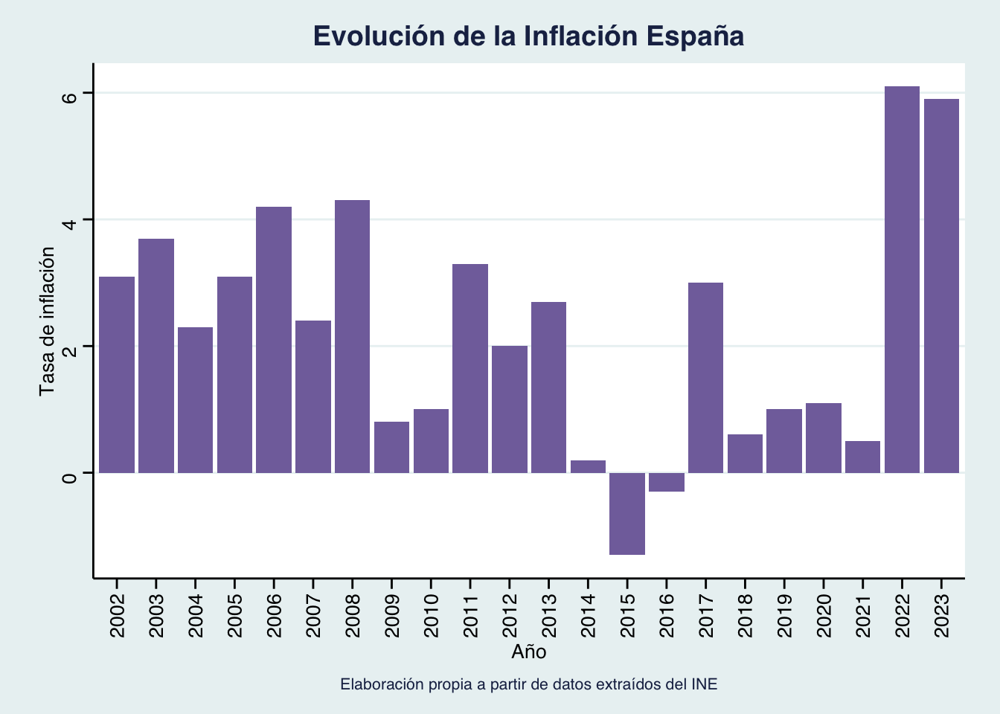
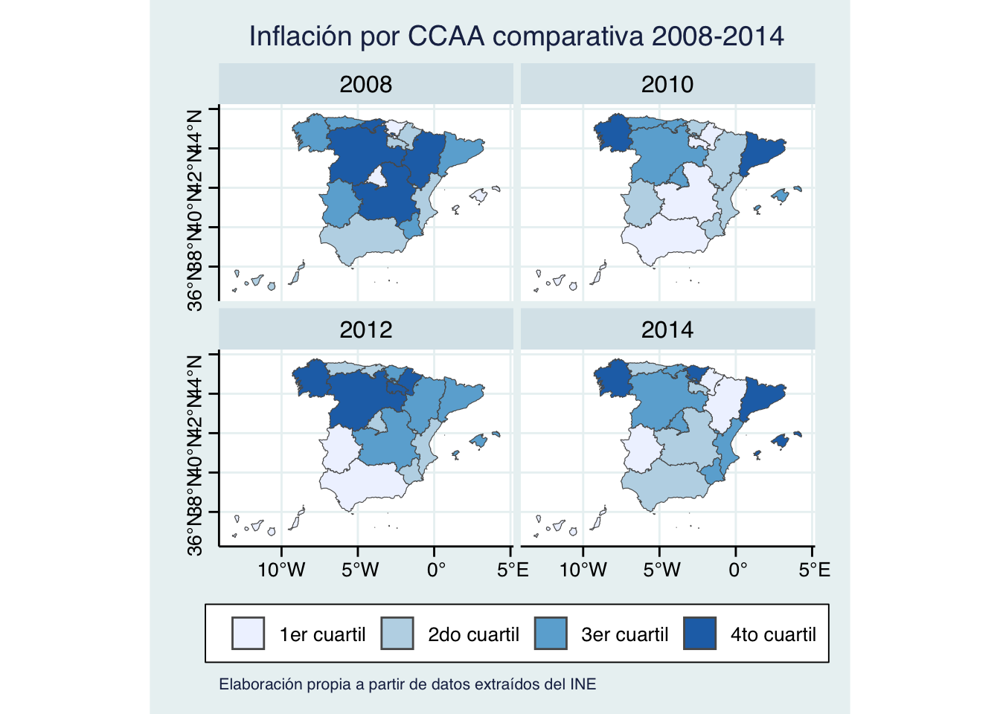
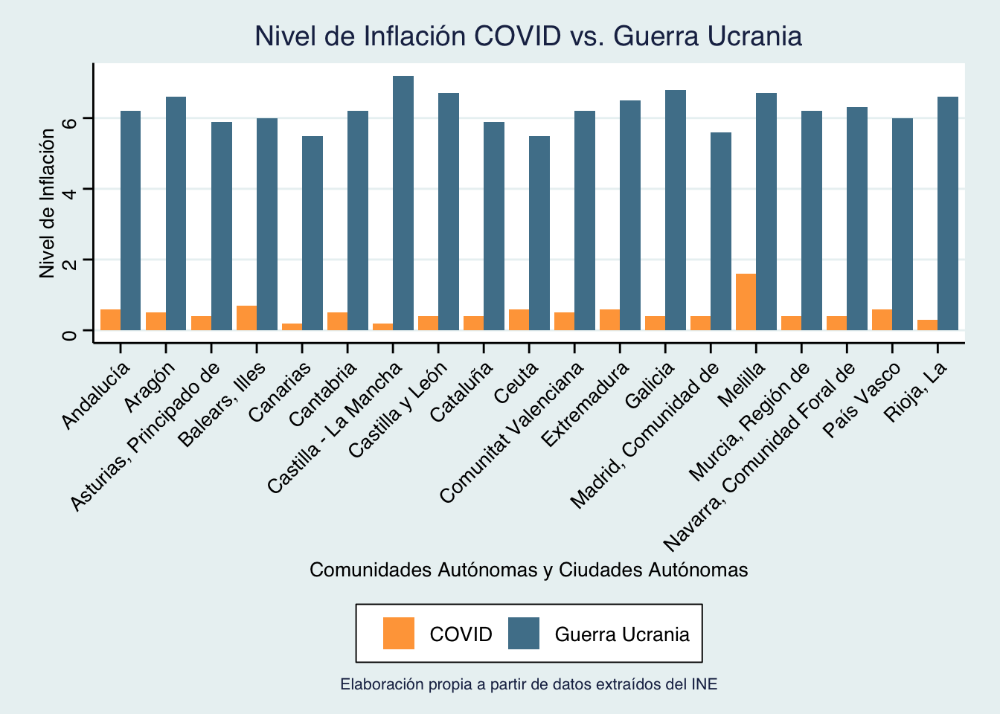
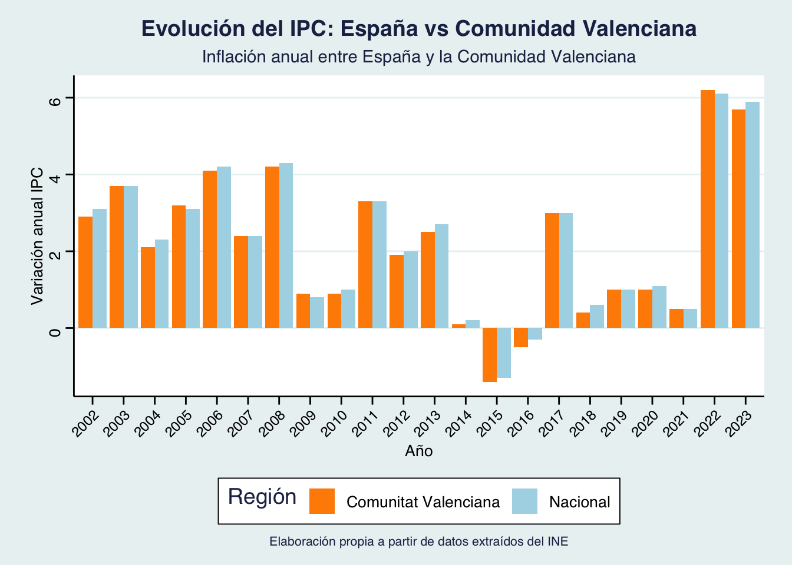
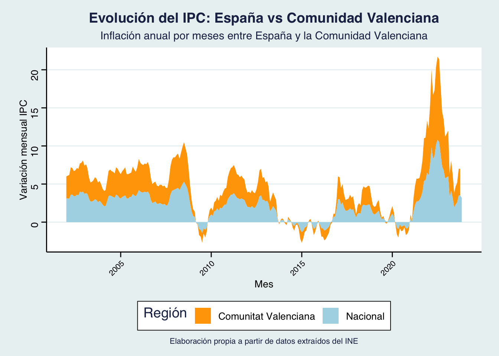

Introducción
El estudio de la inflación, un fenómeno económico que recientemente ha tenido un impacto significativo en las economías más importantes a nivel mundial, es crucial para comprender el contexto de las políticas actuales y futuras. Asimismo, es un indicador fundamental que afecta a las decisiones de inversión, al poder adquisitivo, a la competitividad empresarial y la estabilidad económica de los países.
Por tales motivos, en este trabajo elaboramos un análisis de la evolución de la inflación, tomando como referencia a España y utilizando datos del IPC. Para ello, elaboramos una serie de gráficos y tablas de distintos tipos a partir del manejo de datos, poniendo en práctica los conocimientos de programación adquiridos durante el curso.
Nuestro trabajo se estructura de la siguiente manera:
La primera sección consiste en una comparativa a nivel internacional. Concretamente, comparamos la evolución del IPC entre España y otras 6 grandes economías.
-
La segunda sección se basa en un análisis de la inflación a nivel nacional. Dentro de este apartado, abordamos los siguientes aspectos:
- Evolución de inflación para España en agregado
- Evolución de inflación por Comunidades Autónomas
- Evolución de la inflación en las CCAA más ricas vs CCAA más pobres
- Impacto de la crisis del 2008, COVID-19 y guerra Rusia - Ucrania en las CCAA
- Evolución de la inflación entre la Comunidad Valenciana y España
Por último, concluimos el trabajo con una serie de reflexiones finales.
Datos, Metodología y Definiciones
El presente análisis se sumerge en la dinámica de la inflación interanual, basándose en datos provenientes de dos fuentes distintas. La medición del nivel de inflación se ha abordado a través del Índice de Precios al Consumidor (IPC).
Inicialmente, para llevar a cabo la comparativa a nivel internacional entre España y otras naciones, se ha recurrido a los datos proporcionados por la OCDE. En este contexto, el CPI ha servido como indicador primordial para evaluar y contextualizar el nivel de inflación en el escenario internacional.
El enfoque de nuestro análisis se amplía para explorar la variación del nivel de inflación entre las distintas comunidades autónomas. Para este propósito, se han empleado datos suministrados por el Instituto Nacional de Estadística (INE). Estos datos revelan la fluctuación anual del IPC específicamente para cada Comunidad Autónoma, permitiendo una evaluación detallada de las disparidades regionales en términos de inflación.
En ambos casos, se ha optado por utilizar los datos correspondientes al 1 de enero de cada año en cuestión.
Definiciones:
Inflación: Aumento generalizado y sostenido en el nivel de precios de bienes y servicios en una economía durante un período de tiempo. Se manifiesta como una disminución del valor adquisitivo de la moneda, lo que significa que con el mismo dinero se puede comprar menos cantidad de bienes o servicios.
CPI (Índice de Precios al Consumidor): Indicador económico que mide los cambios en el precio promedio de una cesta de bienes y servicios consumidos habitualmente por los hogares. Es utilizado para calcular la inflación, mostrando cómo los precios de estos bienes y servicios han variado con el tiempo.
Inflación interanual: Medida que compara el nivel de precios de bienes y servicios en un período específico con el mismo período del año anterior.
Deflación: Fenómeno opuesto a la inflación. Se refiere a una disminución generalizada y sostenida en el nivel de precios de bienes y servicios en una economía durante un período prolongado.
Comparativa a nivel internacional
En un mundo globalizado y con una elevada interdependencia económica, comprender las fluctuaciones y tendencias en la evolución de la inflación se vuelve esencial. El código que se muestra en este apartado realiza un análisis comparativo entre España y otras potencias económicas destacadas, trazando una panorámica visual de la evolución de los índices de inflación a lo largo de los años. Esta comparativa ofrece una visión práctica y útil de cómo se han comportado los precios al consumo en diferentes países, destacando posibles patrones y variaciones significativas que pueden influir en la toma de decisiones económicas a nivel global.
Comparación del IPC de España vs Otros países
El índice empleado para medir la inflación a lo largo del tiempo es el Índice de Precios al Consumidor (IPC) y el período de análisis comprende desde 1990 hasta 2022.
El data munging comienza descargando y procesando los datos del IPC procedentes de la base de datos de la OCDE, nos quedamos con la frecuencia anual y la medida de crecimiento agregado del IPC. Luego, filtramos y seleccionamos los datos específicos de los siguientes países: España, Italia, Francia, Alemania, Japón, Reino Unido y Estados Unidos. Por otra parte, transformamos las fechas al formato estándar y asignamos los códigos ISO de dos letras a los países para su uniformidad en el conjunto de datos. Finalmente, genera un gráfico interactivo que muestra la evolución del IPC y brinda una perspectiva visual atractiva para apreciar las tendencias internacionales.
Código
#- Datos (Inflación de la OCDE)
url_inflacion <- "https://stats.oecd.org/sdmx-json/data/DP_LIVE/.CPI.../OECD?contentType=csv&detail=code&separator=comma&csv-lang=en"
ruta_inflacion <- "./datos/inflacion_ocde.csv"
curl::curl_download(url_inflacion, ruta_inflacion) # descargamos los datos
inflacion_orig <- readr::read_csv(ruta_inflacion)
#- Data munging
inflacion <- inflacion_orig %>%
filter(FREQUENCY == "A") %>%
filter(MEASURE == "AGRWTH") %>%
filter(SUBJECT == "TOT") %>%
select(pais = LOCATION, año = TIME, inflacion = Value) %>%
filter(pais %in% c("ESP","ITA","FRA","DEU","JPN","GBR","USA")) %>%
filter(año >= 1990) %>%
mutate(año = as.Date(paste0(año, "-01-01")),
iso2 = countrycode(sourcevar = pais, origin = "iso3c",
destination = "iso2c", warn = FALSE))
#- Gráfico interactivo
p <- ggplot(inflacion, aes(x = año, y = inflacion, color = pais)) +
geom_line(size = 1) +
labs(title = "Evolución del IPC por país",
x = "Año", y = "Variación anual IPC", caption = "Elaboración propia a partir de datos extraídos de OCDE") +
theme_minimal() +
theme(legend.position = "bottom",
axis.text.x = element_text(angle = 45, hjust = 1, size = 8),
plot.title = element_text(size = 20, face = "bold", hjust = 0.5),
axis.title.x = element_text(size = 13, hjust = 1, vjust = 0),
axis.title.y = element_text(size = 13, hjust = 1, vjust = 1),
legend.title = element_text(face = "bold"), plot.caption = element_text(hjust = 0.5),
panel.grid.major = element_line(colour = "gray87", linetype = "dashed"),
panel.background = element_rect(fill = "aliceblue"),
panel.grid.minor = element_blank(),
axis.text = element_text(family = "serif", size = 9, colour = "gray17")) + scale_color_manual(values = c("coral1", "tan4", "yellow", "blue", "red", "orange", "green3")) +
geom_text(aes(label = pais), nudge_x = 0.5, nudge_y = 0.5, hjust = 0)
p_animated <- p + transition_reveal(año) +
enter_fade() +
exit_fade()
animate(p_animated, nframes = 200, fps = 20) 
A la luz de la representación gráfica, podemos observar que:
A lo largo del periodo desde 1990 hasta aproximadamente 1997, se evidencia un patrón generalizado de desaceleración en la inflación en todos los países analizados.
En contraste, desde el comienzo de la década del 2000 hasta el estallido de la crisis inmobiliaria en 2008, se registra un aumento generalizado de la inflación, con notorias alzas en España y Estados Unidos, atribuibles al auge de la burbuja inmobiliaria. En este contexto, Japón destaca por mantener consistentemente una baja tasa de inflación e incluso períodos de deflación.
La Gran Depresión de 2008 provoca una disminución abrupta y marcada en la inflación, llegando incluso a tasas negativas en Japón, motivada por el impacto devastador de la depresión y las políticas económicas restrictivas adoptadas. En el período de recuperación económica posterior (2012-2018), se observa una tendencia leve pero similar en la evolución de la inflación entre los países analizados.
Durante la crisis del COVID-19, se registra una disminución uniforme en la inflación en los países, aunque no de manera significativa, debido a las características particulares de esta crisis económica, caracterizada por un doble impacto de shocks negativos tanto en la oferta como en la demanda.
En 2021, el conflicto entre Rusia y Ucrania provoca un aumento abrupto de la inflación en todos los países, impulsado por el shock negativo de oferta que provocó un aumento de los precios de la energía y efectos de segunda ronda. Sin embargo, la inflación también se vió agravada por la recuperación de la demanda posterior a la pandemia, los cuellos de botella y el efecto de las políticas hiperexpansivas. Es digno de mención el caso de la economía española, que se destaca al registrar una tasa de inflación particularmente alta al inicio de esta crisis, superando aproximadamente el 8%.
Comparativa a nivel nacional
Evolución de la inflación para España en Agregado
Código
#- 3.0) Limpieza de los datos del apartado 3 ----
ruta <- "./datos/INE.CSV" #Bajamos los datos extraídos del INE
df_inflacion <- rio::import(ruta)
#Los arreglamos para que solo salga un dato de inflación por año (el dato de inflación que sale corresponde a la inflación anual de enero). El resto de código es solo arreglando los nombres
df0 <- df_inflacion %>%
filter(str_sub(Periodo, 6, 7) == "01") %>%
mutate(Periodo = str_sub(Periodo, 1, 4)) %>%
mutate(`Comunidades y Ciudades Autónomas` = ifelse(`Comunidades y Ciudades Autónomas` != "Nacional",
str_sub(`Comunidades y Ciudades Autónomas`, 4),
`Comunidades y Ciudades Autónomas`)) %>%
select(`Comunidades y Ciudades Autónomas`, Periodo, Total) %>%
rename("CCAA" = `Comunidades y Ciudades Autónomas` ) %>%
mutate(Total = as.numeric(gsub(",", ".",Total)))
#Por si es de utilidad, aquí está el mismo gráfico pero en formato wider
df1 <- df0 %>% pivot_wider(names_from = Periodo, values_from = Total)
df_infl_esp <- df0 %>% filter(`CCAA`== "Nacional")
p2 <- ggplot(data = df_infl_esp,
aes(x = Periodo, y = Total)) +
geom_col(fill = "#8270AA") +
theme_minimal()+
theme_stata() +
labs(title = "Evolución de la Inflación España", caption = "Elaboración propia a partir de datos extraídos del INE", x = "Año", y = "Tasa de inflación") +
theme(axis.text.x = element_text(angle = 90, vjust = 0.5, hjust=1), plot.title = element_text(face = "bold", hjust = 0.5), plot.caption = element_text(hjust = 0.5))
p2
Este gráfico de barras muestra la evolución del nivel de inflación nacional entre 2002 y 2023. De primera mano el gráfico revela una serie de fluctuaciones significativas en los niveles de inflación a lo largo de estos años causadas eventos económicos significativos como crisis financieras, recuperaciones, deflación y períodos de cierta estabilidad.
Se observa que, durante los primeros años del período analizado, la inflación mostró una tendencia al alza, alcanzando niveles notables en 2006 y 2008, con tasas del 4.2% y 4.3%, respectivamente.
La crisis financiera de 2008 resultó en un descenso abrupto en la tasa de inflación en 2009, cayendo a un mínimo del 0.8%. Este fenómeno puede atribuirse a una contracción económica global, que provocó una caída de la demanda y de la inversión.
Los años posteriores a la crisis mostraron una recuperación gradual, con niveles de inflación fluctuantes pero generalmente moderados hasta 2014. Sin embargo, en 2015 y 2016, se registraron tasas negativas de inflación (-1.3% y -0.3%, respectivamente), lo cual es indicativo de una deflación, un fenómeno preocupante que puede desincentivar el gasto y la inversión, lo que afecta adversamente al crecimiento económico.
A partir de 2017, se observa un repunte en la inflación, alcanzando niveles del 3.0% ese año. Sin embargo, el período entre 2018 y 2021 mostró una relativa estabilidad en los niveles de inflación, manteniéndose en cifras de alrededor del 1%.
Finalmente, el año 2022 marcó un cambio significativo, con una aceleración notable en la inflación causada por la Guerra entre Rusia y Ucrania. El nivel de inflación alcanzó el 6.1%, seguido de un 5.9% en 2023.
Evolución de inflación para todas las Comunidades Autonómas
En esta sección, se analiza la evolución de la tasa de inflación en todas las Comunidades Autónomas de España. La información abarca un periodo significativo, permitiendo identificar patrones y variaciones a lo largo del tiempo.
Código
| CCAA | 2002 | 2003 | 2004 | 2005 | 2006 | 2007 | 2008 | 2009 | 2010 | 2011 | 2012 | 2013 | 2014 | 2015 | 2016 | 2017 | 2018 | 2019 | 2020 | 2021 | 2022 | 2023 |
|---|---|---|---|---|---|---|---|---|---|---|---|---|---|---|---|---|---|---|---|---|---|---|
| Nacional | 3.1 | 3.7 | 2.3 | 3.1 | 4.2 | 2.4 | 4.3 | 0.8 | 1.0 | 3.3 | 2.0 | 2.7 | 0.2 | -1.3 | -0.3 | 3.0 | 0.6 | 1.0 | 1.1 | 0.5 | 6.1 | 5.9 |
| Andalucía | 3.0 | 3.6 | 2.1 | 3.0 | 4.0 | 2.6 | 4.3 | 0.6 | 0.9 | 3.5 | 1.7 | 2.5 | 0.1 | -1.4 | -0.3 | 3.0 | 0.5 | 0.8 | 1.0 | 0.6 | 6.2 | 6.3 |
| Aragón | 3.3 | 3.5 | 2.1 | 3.0 | 4.2 | 2.6 | 4.6 | 1.0 | 1.0 | 3.0 | 2.1 | 2.5 | 0.0 | -1.6 | -0.2 | 2.9 | 0.5 | 1.0 | 1.0 | 0.5 | 6.6 | 5.8 |
| Asturias, Principado de | 3.2 | 3.7 | 2.4 | 2.7 | 4.0 | 2.0 | 4.5 | 0.9 | 1.0 | 3.7 | 2.0 | 2.6 | 0.0 | -1.5 | -0.3 | 3.0 | 0.3 | 0.9 | 0.9 | 0.4 | 5.9 | 6.1 |
| Balears, Illes | 3.2 | 3.9 | 1.8 | 3.2 | 3.8 | 2.5 | 3.8 | 0.8 | 1.2 | 2.7 | 2.1 | 2.8 | 0.5 | -1.1 | -0.1 | 2.9 | 0.7 | 0.7 | 1.1 | 0.7 | 6.0 | 5.7 |
| Canarias | 2.3 | 2.9 | 1.7 | 2.3 | 3.2 | 2.0 | 4.2 | 0.7 | 0.2 | 2.5 | 1.4 | 2.3 | -0.2 | -1.4 | -0.7 | 2.5 | 0.8 | 1.0 | 1.1 | 0.2 | 5.5 | 6.3 |
| Cantabria | 3.0 | 3.5 | 2.2 | 2.6 | 4.1 | 2.3 | 4.7 | 0.7 | 1.2 | 3.5 | 1.9 | 3.5 | 0.3 | -1.7 | -0.4 | 3.1 | 0.4 | 0.9 | 1.1 | 0.5 | 6.2 | 5.7 |
| Castilla y León | 3.1 | 3.5 | 1.8 | 3.0 | 4.3 | 2.4 | 4.5 | 0.4 | 1.0 | 3.5 | 2.3 | 2.9 | 0.3 | -1.8 | -0.6 | 3.4 | 0.5 | 1.1 | 1.1 | 0.4 | 6.7 | 6.5 |
| Castilla - La Mancha | 2.8 | 3.5 | 2.2 | 3.2 | 4.6 | 2.0 | 4.7 | 0.1 | 0.9 | 3.7 | 2.2 | 2.5 | 0.1 | -2.0 | -0.6 | 3.3 | 0.6 | 0.7 | 1.4 | 0.2 | 7.2 | 6.9 |
| Cataluña | 3.1 | 4.1 | 2.8 | 3.6 | 4.6 | 2.4 | 4.4 | 1.1 | 1.4 | 3.3 | 2.2 | 3.3 | 0.3 | -0.9 | 0.0 | 3.1 | 0.9 | 1.0 | 1.2 | 0.4 | 5.9 | 5.3 |
| Comunitat Valenciana | 2.9 | 3.7 | 2.1 | 3.2 | 4.1 | 2.4 | 4.2 | 0.9 | 0.9 | 3.3 | 1.9 | 2.5 | 0.1 | -1.4 | -0.5 | 3.0 | 0.4 | 1.0 | 1.0 | 0.5 | 6.2 | 5.7 |
| Extremadura | 2.8 | 3.1 | 1.8 | 2.6 | 3.5 | 2.1 | 4.3 | 0.7 | 0.9 | 3.4 | 1.7 | 2.7 | -0.1 | -1.5 | -0.6 | 2.9 | 0.2 | 1.0 | 1.0 | 0.6 | 6.5 | 6.6 |
| Galicia | 3.2 | 4.0 | 2.2 | 3.1 | 4.1 | 2.1 | 4.4 | 0.5 | 1.2 | 3.4 | 2.2 | 2.5 | 0.4 | -1.4 | -0.5 | 3.2 | 0.6 | 0.8 | 1.2 | 0.4 | 6.8 | 6.4 |
| Madrid, Comunidad de | 3.1 | 3.6 | 2.4 | 2.9 | 4.1 | 2.5 | 4.0 | 1.0 | 1.1 | 3.1 | 2.0 | 2.4 | 0.2 | -1.3 | -0.2 | 2.7 | 0.7 | 1.3 | 0.9 | 0.4 | 5.6 | 5.3 |
| Murcia, Región de | 2.5 | 4.4 | 2.9 | 2.9 | 4.6 | 2.5 | 4.4 | 0.4 | 0.9 | 3.3 | 1.8 | 2.8 | 0.2 | -1.6 | -0.2 | 3.0 | 0.0 | 0.6 | 1.2 | 0.4 | 6.2 | 6.3 |
| Navarra, Comunidad Foral de | 3.6 | 3.7 | 2.3 | 3.1 | 4.2 | 1.8 | 4.2 | 0.9 | 0.5 | 3.0 | 2.3 | 2.8 | -0.4 | -1.4 | -0.1 | 2.9 | 0.3 | 1.3 | 1.2 | 0.4 | 6.3 | 6.4 |
| País Vasco | 3.3 | 3.5 | 2.4 | 2.9 | 4.2 | 2.4 | 4.1 | 1.3 | 0.9 | 3.1 | 2.0 | 2.5 | 0.6 | -1.0 | 0.1 | 2.9 | 0.5 | 1.0 | 1.4 | 0.6 | 6.0 | 5.6 |
| Rioja, La | 3.6 | 3.7 | 2.3 | 3.2 | 4.5 | 2.7 | 4.2 | 0.8 | 0.7 | 3.4 | 2.2 | 2.6 | 0.0 | -1.2 | -0.2 | 3.1 | 0.2 | 1.1 | 1.1 | 0.3 | 6.6 | 6.2 |
| Ceuta | 3.2 | 3.6 | 3.1 | 2.5 | 3.7 | 2.3 | 3.4 | 1.2 | 1.4 | 2.2 | 1.7 | 1.8 | 0.0 | -0.8 | -0.5 | 2.5 | -0.3 | 0.8 | 0.3 | 0.6 | 5.5 | 6.6 |
| Melilla | 1.7 | 3.8 | 2.6 | 3.7 | 4.6 | 3.2 | 3.5 | 0.8 | 1.8 | 2.9 | 1.2 | 1.1 | -0.2 | -0.7 | -0.7 | 2.8 | 0.6 | -0.5 | 0.8 | 1.6 | 6.7 | 6.9 |
Comunidad con mayor inflación para cada año
Para comprender la dinámica inflacionaria a nivel regional, se presenta a continuación una visualización interactiva que destaca, para cada año, el dato de mayor inflación registrado en todo el país y la respectiva Comunidad Autónoma donde ocurrió. La interactividad facilita la exploración detallada de cada región y su contribución al panorama inflacionario general. Se pueden extraer conclusiones interesantes para los años disponibles:
- De las 19 CCAA que hay en España, hubo 11 regiones distintas que se han llevado el título a la comunidad con mayor inflación en un año.
- La CCAA que más a repetido ha sido Melilla con un total de 5 aparaciones. Es decir, en más del 20% de los años recogidos, Melilla ha sido la Comunidad Autónoma con mayor inflación anual.
- En el año 2015, todas las comunidades experimentaron una inflación interanual negativa.
- 2022 y 2023 fueron los años con mayor inflación con respecto a la tendencia pasada, y Castilla-La Mancha tuvo, en ambos años, la mayor tasa inflacionaria.
Código
df2 <- df0 %>%
group_by(Periodo) %>%
slice_max(order_by = Total, n = 1) %>%
ungroup() %>%
arrange(Periodo)
# Crear el gráfico base con ggplot
p <- ggplot(data = df2, mapping = aes(x = Periodo, y = Total, fill = CCAA)) +
geom_bar(stat = "identity", position = "identity", width = 0.7) +
labs(title = "Evolución de la Comunidad con mayor Inflación cada año", tag = "ESPAÑA", caption = "Elaboración propia a partir de datos extraídos del INE") +
guides(fill = FALSE) +
theme_stata(base_family = "") +
theme(legend.position = "none", axis.text.x = element_text(angle = 45, hjust = 1))
# Convertir el gráfico base a un gráfico interactivo con plotly
p_interactivo <- ggplotly(p, tooltip = "CCAA")
# Mostrar el gráfico interactivo
p_interactivoTres comunidades con mayor inflación anual en la historia
La siguiente tabla destaca las tres Comunidades Autónomas que experimentaron la mayor tasa de inflación anual en diferentes momentos de la historia registrada. Estos datos proporcionan una visión específica de los periodos en los que ciertas regiones experimentaron fluctuaciones económicas significativas.
Código
#Tres comunidades con mayor inflación
df1_long <- df1 %>%
gather(key = "Año", value = "Inflacion", - CCAA)
# Seleccionar las tres observaciones con los valores más altos de inflación
top_3_inflacion <- df1_long %>%
arrange(desc(Inflacion)) %>%
slice_head(n = 3)
tabla <- top_3_inflacion %>%
kable() %>%
kable_styling(bootstrap_options = c("striped", "hover", "condensed", "responsive"),
font_size = 14, full_width = FALSE)
tabla| CCAA | Año | Inflacion |
|---|---|---|
| Castilla - La Mancha | 2022 | 7.2 |
| Castilla - La Mancha | 2023 | 6.9 |
| Melilla | 2023 | 6.9 |
Tres comunidades con menor inflación anual en la historia
En contraste con las regiones que experimentaron las mayores tasas de inflación, la siguiente tabla destaca las tres Comunidades Autónomas que registraron las tasas de inflación anual más bajas en diferentes momentos de los distintos años considerados.
Código
| CCAA | Año | Inflacion |
|---|---|---|
| Castilla - La Mancha | 2015 | -2.0 |
| Castilla y León | 2015 | -1.8 |
| Cantabria | 2015 | -1.7 |
Evolución de la inflación en las CCAA más ricas vs CCAA más pobres
En esta sección, se examina la evolución de la inflación en las Comunidades Autónomas más ricas y más pobres de España para el año 2021, con el objetivo de, más adelante, identificar posibles disparidades económicas en sus respectivas inflaciones a lo largo del tiempo.
Top 3 CCAA más ricas vs top 3 CCAA más pobres e 2021
La siguiente tabla presenta las tres Comunidades Autónomas con el PIB per cápita más elevado en el año 2021. Estos datos ofrecen una perspectiva sobre las regiones económicamente más prósperas en ese año.
Código
# Crear un dataframe con los datos para 2021 del PIB pc
ruta1 <- "./datos/pibpccomunidades.xlsx"
df_pibpc <- rio::import(ruta1)
#Hago una taba para las tres comunidades con mayor PIB pc
top_3_pibpc <- df_pibpc %>%
arrange(desc(Valor)) %>%
slice_head(n = 3)
# Crear la tabla con kableExtra
tabla_top_pibpc <- top_3_pibpc %>%
kable() %>%
kable_styling(bootstrap_options = c("striped", "hover", "condensed", "responsive"),
font_size = 14, full_width = FALSE)
# Mostrar la tabla
tabla_top_pibpc| Comunidad | Valor | Variacion_Anual |
|---|---|---|
| Madrid, Comunidad de | 34821 | 7.7 |
| País Vasco | 32925 | 8.5 |
| Navarra, Comunidad Foral de | 31024 | 7.6 |
En contraparte, la siguiente tabla destaca las tres Comunidades Autónomas con el PIB per cápita más bajo en el mismo año. Estos datos proporcionan una visión de las regiones con mayores desafíos económicos en el mismo periodo.
Código
bottom_3_pibpc <- df_pibpc %>%
arrange(Valor) %>%
slice_head(n = 3)
# Crear la tabla bonita con kableExtra
tabla_bottom_pibpc <- bottom_3_pibpc %>%
kable() %>%
kable_styling(bootstrap_options = c("striped", "hover", "condensed", "responsive"),
font_size = 14, full_width = FALSE)
# Mostrar la tabla bonita
tabla_bottom_pibpc| Comunidad | Valor | Variacion_Anual |
|---|---|---|
| Andalucía | 18906 | 7.8 |
| Canarias | 18990 | 10.4 |
| Extremadura | 19072 | 6.9 |
Comparativa de la evolución de sus respectivas inflaciones
La siguiente visualización interactiva compara la evolución de la inflación promedio en las Comunidades Autónomas más ricas y más pobres, utilizando los datos de las tres comunidades más ricas y más pobres previamente señaladas para el año 2021.
Los promedios se han calculado tomando en cuenta las tasas de inflación de las tres Comunidades Autónomas más ricas y más pobres, proporcionando una visión consolidada de cómo estas regiones han experimentado variaciones en sus tasas de inflación a lo largo del tiempo.
Esta gráfica interactiva facilita la identificación de patrones y diferencias significativas en la evolución inflacionaria entre las Comunidades Autónomas más destacadas en términos económicos.
Código
# Filtrar las comunidades más ricas (top 3)
comunidades_ricas <- c("Madrid, Comunidad de", "País Vasco", "Navarra, Comunidad Foral de")
df_ricas <- df0 %>%
filter(CCAA %in% comunidades_ricas) %>%
group_by(Periodo) %>%
summarize(promedio = mean(Total))
# Filtrar las comunidades más pobres (bottom 3)
comunidades_pobres <- c("Extremadura", "Andalucía", "Canarias")
df_pobres <- df0 %>%
filter(CCAA %in% comunidades_pobres) %>%
group_by(Periodo) %>%
summarize(promedio = mean(Total))
# Unir los dos conjuntos de datos
df_comparativa <- bind_rows(
mutate(df_ricas, Grupo = "Comunidades Ricas"),
mutate(df_pobres, Grupo = "Comunidades Pobres")
)
# Gráfico interactivo con plotly y tema stata
p3_4_2 <- ggplot(df_comparativa, aes(x = as.numeric(Periodo), y = promedio, color = Grupo, group = Grupo)) +
geom_line() +
labs(title = "Evolución del Promedio de Inflación en Comunidades Autónomas",
x = "Año",
y = "Tasa de Inflación Promedio",
color = "Grupo",
caption = "Elaboración propia a partir de datos extraídos del INE") +
theme_stata(base_family="") + theme(plot.caption = element_text(hjust = 0.5))
# Convertir el gráfico base a un gráfico interactivo con plotly
p_interactivo_3_4_2 <- ggplotly(p3_4_2, tooltip = "Grupo")
# Mostrar el gráfico interactivo
p_interactivo_3_4_2Tras analizar la evolución de la inflación en las Comunidades Autónomas más ricas y más pobres, se observa que, si bien no se aprecian disparidades extremas, existe una tendencia general. El promedio de las tasas de inflación en las Comunidades Autónomas consideradas más pobres tiende a situarse por debajo del promedio de las más ricas durante más periodos de tiempo.
Esta observación sugiere que, a lo largo de los años, las disparidades económicas entre regiones pueden influir de manera sutil pero consistente en las tasas de inflación. Aunque factores individuales pueden impactar estas variaciones, el análisis destaca la importancia de comprender las dinámicas económicas específicas de cada región para una evaluación más completa de los patrones inflacionarios en el contexto nacional.
Evolución de la inflación en las CCAA: Crisis del 2008, Crisis del COVID, Guerra Rusia - Ucrania
Crisis del 2008
Código
#- 3.5) Evolución de la inflación en las CCAA: Crisis del 2008, Crisis del COVID, Guerra Rusia - Ucrania ----
#- 3.5.1) Crisis del 2008 ----
#Obtenemos el mapa de España por CCAA
df_ccaa <- esp_get_ccaa()%>%
select(ine.ccaa.name, geometry) %>%
rename("CCAA" = ine.ccaa.name)
#Nuevo df con los datos de inflación que necesitamos
df_datos_mapa <- df0 %>% filter(Periodo %in% c(2008, 2010, 2012, 2014)) %>%
filter(`CCAA`!= "Nacional")
df_mapa <- left_join(df_ccaa, df_datos_mapa, by = c("CCAA" = "CCAA"))
df_mapa_ccaa <- df_mapa %>%
group_by(Periodo) %>%
mutate(inflacion_ccaa_4 = ntile(Total, 4)) %>%
ungroup() %>%
mutate(inflacion_ccaa_4.f = forcats::as_factor(inflacion_ccaa_4))
p7 <- ggplot(df_mapa_ccaa) +
geom_sf(aes(geometry = geometry, fill = inflacion_ccaa_4.f)) +
scale_fill_brewer(palette = "Blues", name = NULL,
labels = c("1er cuartil", "2do cuartil", "3er cuartil", "4to cuartil"))+
facet_wrap(vars(Periodo)) +
theme(axis.text.x = element_blank(),
axis.text.y = element_blank(), plot.caption = element_text(hjust = 0.5)) +
labs(title = "Inflación por CCAA comparativa 2008-2014" , caption = "Elaboración propia a partir de datos extraídos del INE") + theme_stata() + scale_y_continuous(breaks = NULL) + scale_x_continuous(breaks = NULL)
p7
En estos mapas coropléticos mostramos una representación visual de los niveles de inflación por Comunidad Autónoma durante los años 2008, 2010, 2012 y 2014. En lugar de representar los datos directamente en términos porcentuales, se ha optado por una codificación de colores basada en cuartiles, dividiendo las regiones en grupos según sus niveles relativos de inflación para cada año.
La representación cartográfica de los niveles de inflación por Comunidad Autónoma mediante cuartiles ofrece una forma visualmente impactante de comprender las diferencias regionales en los niveles de inflación a lo largo del tiempo, permitiendo una evaluación comparativa rápida y destacando las tendencias cambiantes en la economía regional. Las áreas geográficas con tasas de inflación más altas se presentan en tonos más oscuros, correspondiendo al cuartil 4, mientras que aquellas con tasas más bajas se muestran en tonos más claros, categorizadas en el cuartil 1. Aquellas regiones ubicadas en los cuartiles 2 y 3 se representan con colores intermedios, indicando niveles de inflación moderadamente altos y medios, respectivamente.
En cuanto a la distribución de los cuartiles, se observan variaciones significativas entre los diferentes períodos. Por ejemplo, en el año 2008, varias regiones, como Cantabria, Castilla y León, y Cataluña, se encontraban en el cuartil 4, indicando niveles más altos de inflación en comparación con otras comunidades.
En contraste, regiones como Murcia, Navarra, País Vasco, Ceuta y Melilla estaban clasificadas en el cuartil 1, lo que sugiere niveles más bajos de inflación para ese año en particular.
A medida que avanzamos en el tiempo, se observan cambios en la distribución de los cuartiles. Por ejemplo, en 2014, hubo una disminución general en los niveles de inflación, lo que llevó a un aumento de las regiones clasificadas en los cuartiles inferiores (1 y 2), mientras que las áreas en el cuartil 4 tendieron a reducirse.
Las razones detrás de estas variaciones pueden ser multifacéticas y pueden estar relacionadas con factores económicos específicos para cada región, como la actividad económica, el comportamiento del mercado laboral y las condiciones de oferta y demanda en sectores clave como el inmobiliario o energético.
Crisis del COVID y Guerra Rusia - Ucrania
Código
#- 3.5.2) Crisis del COVID y Guerra Rusia - Ucrania ----
#Primero preparo un sf con la info necesaria para el gráfico de barras
df_barras <- df0 %>%
filter(`CCAA`!= "Nacional") %>%
filter(Periodo %in% c(2021,2022))
#Ahora hago el gráfico de barras
p8 <- df_barras %>%
ggplot(aes(x = CCAA, y = Total, fill = Periodo)) +
geom_col(position = "dodge") +
theme_stata()+
labs(x = "Comunidades Autónomas y Ciudades Autónomas", y = "Nivel de Inflación",
title = "Nivel de Inflación COVID vs. Guerra Ucrania", caption = "Elaboración propia a partir de datos extraídos del INE") +
scale_fill_manual(values = c("#FFA547", "#508099"),
labels = c("COVID", "Guerra Ucrania")) +
theme(axis.text.x = element_text(angle = 45, hjust = 1), plot.caption = element_text(hjust = 0.5)) + guides(fill = guide_legend(title = NULL))
p8
Este gráfico de barras compara el nivel de inflación entre enero 2021 y enero 2022, dos años clave para la economía puesto que reflejan las consecuencias de la crisis del COVID-19 y la crisis de la Guerra de Ucrania respectivamente. El gráfico nos ofrece una representación visual impactante de cómo la inflación ha experimentado un aumento sustancial en un solo año y se evidencia claramente esta diferencia entre ambos periodos.
El repentino aumento de la inflación que se observa se atribuye principalmente al estallido de la guerra entre Rusia y Ucrania. Este evento geopolítico provocó un encarecimiento de materias primas y el aumento de los costos de producción. Estos factores, impactan directamente en el nivel de precios de bienes y servicios, lo que explica el aumento en el nivel de inflación que han experimentado todas las comunidades autónomas.
Además, las medidas políticas adoptadas en respuesta a este conflicto también han jugado un papel relevante en el aumento de la inflación. Estas políticas son principalmente, las restricciones comerciales adoptadas frente a Rusia y la incertidumbre generalizada que deriva de esta guerra.
En resumen, el gráfico de barras muestra nos permite evidenciar de un simple vistazo cómo el contexto internacional puede desencadenar variaciones drásticas en la dinámica inflacionaria de un país.
Evolución de la inflación: Comunidad Valenciana vs España
En esta sección, se explora la dinámica de la inflación entre la Comunidad Valenciana y España en su conjunto. El análisis se centra en comprender cómo ha fluctuado el Índice de Precios al Consumidor (IPC) en ambas regiones a lo largo del tiempo, brindando una visión detallada de las tendencias anuales y mensuales.
Por un lado, el enfoque anual revela cómo han variado los precios año tras año, ofreciendo insights sobre posibles patrones de convergencia o divergencia en la inflación entre la CV y la media nacional. Asimismo, el análisis mensual desglosa aún más la evolución de los precios, permitiendo identificar fluctuaciones estacionales o tendencias a corto plazo que pueden proporcionar un entendimiento más profundo de los movimientos inflacionarios entre esta CCAA y España.
Evolución anual
La representación gráfica, mediante barras agrupadas, contrasta la inflación anual a lo largo de distintos años. Al examinar este gráfico, se pueden identificar patrones y posibles periodos de divergencia o convergencia en los índices de precios entre la Comunidad Valenciana y el promedio nacional de España.
Inicialmente, se observa una coherencia notable en la tendencia de la tasa de inflación anual entre la Comunidad Valenciana y el promedio de España.
Entre 2002 y 2008, se detectan incrementos en la inflación, impulsados por el auge del mercado inmobiliario, lo que generó un calentamiento económico. Ambas regiones superaron el umbral del 4% en 2008. Posteriormente, desde el inicio de la crisis hasta 2016, se registra una desaceleración de la inflación, inclusive con dos años de deflación (2015, 2016), siendo más negativas las tasas en la Comunidad Valenciana que en el promedio nacional.
Durante la recuperación económica tras la Gran Recesión y la crisis del COVID-19, las tasas de inflación mostraron una tendencia bastante uniforme. Sin embargo, desde el inicio del conflicto entre Rusia y Ucrania, la tasa de inflación en la Comunidad Valenciana fue ligeramente superior en 2022, superando el 6%, aunque fue ligeramente inferior a finales de enero de 2023, situándose por debajo de ese nivel.
Código
df6 <- df0 %>%
filter( CCAA %in% c("Nacional", "Comunitat Valenciana")) %>%
arrange(Periodo) %>%
mutate(Periodo = factor(Periodo, levels = unique(Periodo)))
# Gráfico de barras agrupadas
p6_a <- ggplot(df6, aes(x = Periodo, y = Total, fill = CCAA)) +
geom_bar(stat = "identity", position = "dodge") +
labs(title = "Evolución del IPC: España vs Comunidad Valenciana",
subtitle = "Inflación anual entre España y la Comunidad Valenciana",
x = "Año",
y = "Variación anual IPC",
fill = "Región",
caption = "Elaboración propia a partir de datos extraídos del INE") +
scale_fill_manual(values = c("Nacional" = "lightblue", "Comunitat Valenciana" = "darkorange")) +
theme_stata() +
theme(axis.text.x = element_text(angle = 45, hjust = 1,vjust = 1, size = 9, face = "plain"),legend.position = "bottom", plot.title = element_text(face = "bold", hjust = 0.5), plot.subtitle = element_text(hjust = 0.5), plot.caption = element_text(hjust = 0.5))
print(p6_a)
Evolución mensual
Finalmente, concluimos esta sección con un gráfico de área que detalla la variación mensual del IPC tanto para la Comunidad Valenciana como para España en su conjunto. Aunque el cambio de frecuencia nos ha permitido disponer de una mayor cantidad de datos, las conclusiones extraídas de esta representación son consistentes con las observaciones realizadas en el análisis anual. Se puede apreciar de manera más detallada la variabilidad de los precios en ambas regiones, respaldando y reforzando las tendencias identificadas previamente en el análisis anual.
Código
# Gráfico de área
df_prueba <- df_inflacion %>%
mutate(`Comunidades y Ciudades Autónomas` = ifelse(`Comunidades y Ciudades Autónomas` !="Nacional", str_sub(`Comunidades y Ciudades Autónomas`, 4), `Comunidades y Ciudades Autónomas`)) %>%
select(`Comunidades y Ciudades Autónomas`, Periodo, Total) %>%
rename("CCAA" = `Comunidades y Ciudades Autónomas` ) %>%
mutate(Total = as.numeric(gsub(",", ".",Total))) %>%
filter( CCAA %in% c("Nacional", "Comunitat Valenciana")) %>%
arrange(Periodo) %>%
mutate(Periodo = factor(Periodo, levels = unique(Periodo))) %>%
select(CCAA, Periodo, Total) %>%
mutate(Periodo = ymd(paste(Periodo, "01")))
p6_b <- ggplot(df_prueba, aes(x = Periodo, y = Total, fill = CCAA)) +
geom_area(alpha = 1.0) +
labs(title = "Evolución del IPC: España vs Comunidad Valenciana",
subtitle = "Inflación anual por meses entre España y la Comunidad Valenciana",
x = "Mes",
y = "Variación mensual IPC",
fill = "Región",
caption = "Elaboración propia a partir de datos extraídos del INE") +
theme_stata() +
theme(legend.position = "bottom",
axis.text.x = element_text(angle = 45, hjust = 1, size = 8),
plot.title = element_text(face = "bold", hjust = 0.5),
plot.subtitle = element_text(hjust = 0.5),
plot.caption = element_text(hjust = 0.5)) +
scale_fill_manual(values = c("Nacional" = "lightblue", "Comunitat Valenciana" = "orange"))
print(p6_b)
Conclusión
Este estudio sobre la inflación en España abarcó tanto comparaciones internacionales como análisis detallados a nivel regional. Al evaluar las tasas de inflación en el contexto de la OCDE y en el ámbito interno entre Comunidades Autónomas, se revelaron patrones y tendencias notables.
La sección internacional contextualizó la inflación en España frente a otros países, proporcionando una visión integral del rendimiento económico relativo. A nivel regional, el análisis detallado resaltó variaciones económicas dentro del país y reveló que, aunque las disparidades entre Comunidades Autónomas no son extremas, las regiones menos prósperas tienden a mostrar tasas de inflación inferiores al promedio de las más ricas durante periodos más prolongados.
Este trabajo contribuye de manera significativa a la comprensión de la dinámica inflacionaria en España, ofreciendo una perspectiva integral que considera tanto factores internacionales como regionales. Estos hallazgos son esenciales para la formulación de políticas económicas efectivas y promover un desarrollo equitativo en toda la nación. En conjunto, este análisis refuerza la importancia de abordar la inflación desde una perspectiva global y regional para una toma de decisiones informada y eficaz.
Por último, queremos destacar que fue la primera vez que los integrantes del grupo utilizabamos un lenguaje de programación. En este sentido, el proceso de trabajo conjunto no solo nos permitió descubrir patrones económicos interesantes, sino que también nos brindó la oportunidad de aprender programación en R. Consideramos que esta habilidad será un activo valioso para nuestro futuro profesional, ya que la programación en R se ha convertido en una herramienta esencial en el ámbito de la investigación y análisis de datos. Queremos expresar nuestro agradecimiento al profesor por su apoyo; entendemos la complejidad de enseñar R de manera efectiva y apreciamos su dedicación para que este aprendizaje fuera significativo y enriquecedor. Este trabajo no solo nos brindó conocimientos académicos, sino que también dejó una marca positiva en nuestro desarrollo profesional y colaborativo.
Código
mensaje_data <- data.frame(
Letra = strsplit("GRACIAS", "")[[1]],
Posicion = seq_len(nchar("GRACIAS"))
)
p <- ggplot(mensaje_data, aes(x = Posicion, y = 0, label = Letra)) +
geom_text(size = 30, color = "skyblue") +
xlim(0, nchar("GRACIAS") + 1) +
coord_fixed(ratio = 20) +
theme_void()
animacion <- p +
transition_states(Posicion, transition_length = 0.5, state_length = 0.5) +
enter_fade() +
exit_fade() +
shadow_mark()
animate(animacion, fps = 20)